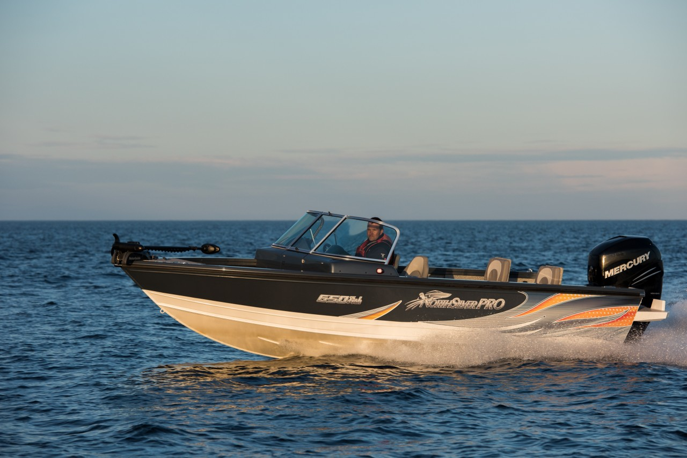

Катер NorthSilver PRO 650 Fish (НортСильвер Про 650 Фиш)
Универсальная моторная лодка открытой компоновки для озер и рек, компактная обладающая отличными ходовыми качествами. Прочный корпус из алюминия и малая осадка дадут Вам возможность пройти по мелководью за щукой или лососем.
Всё просто и со вкусом, ничего лишнего. Превосходный вариант для путешествий и активного времяпровождения на воде от участия в многочасовых рыболовных соревнованиях, до занятия экстремальными видами водного спорта.
Технические характеристики катера:
| Параметр | NorthSilver PRO 650 Fish |
|
Длина |
6.5 м |
|
Ширина |
2.44 м |
|
Масса |
1000 кг |
|
Вместимость |
6 человек |
|
Материал корпуса |
Алюминий |
|
Килеватость корпуса |
20° |
|
Рекоменд. мощность двигателя |
130-250 л.с. |
|
Макс. допустимый вес двигателя |
300 кг |
|
Максимальная грузоподъемность |
600 кг |
|
Минимальная высота надводного борта |
57 см |
|
Высота борта на миделе |
108 см |
|
Высота транца |
61 см |
|
Емкость топливного бака |
200 л |
Стандартное оборудование:
- гидравлическое рулевое управление
- подготовка под установку электромотора
- подготовка под установку берегового питания
- откидная задняя скамейка с мягкими сиденьями
- лестница для купания
- скрытые утки из нержавеющей стали
- душ в кокпите с помпой
- садок на 120 л. с термоизоляцией
- ходовые и якорные огни
- две помпы
- привальный брус с замками из нержавеющей стали
- отделка салона морским винилом
- огнетушитель
- стационарный алюмин. топливный бак 200 л.
- датчик уровня топлива
- два съёмных складных сидения
- три сухих рундука (один с замком)
- два рундука под спиннинги с замком (всего под 7-9 спиннингов)
- топливный фильтр
- остекление Taylor Made
- многофункциональный профиль планширя
- ящики для хранения
- нескользящие накладки на планшире
- покраска корпуса краской "металлик" и виниловые наклейки
- кринолиновые площадки
{kind=link}
{kind=link}
{kind=link}
{kind=link}
{kind=link}
{kind=link}
{kind=link}
{kind=link}
{kind=link}